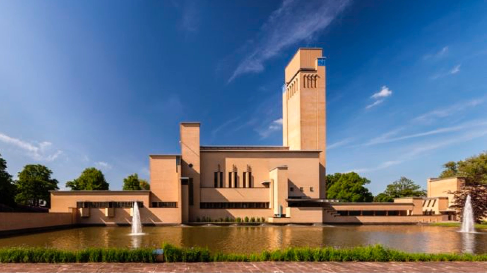
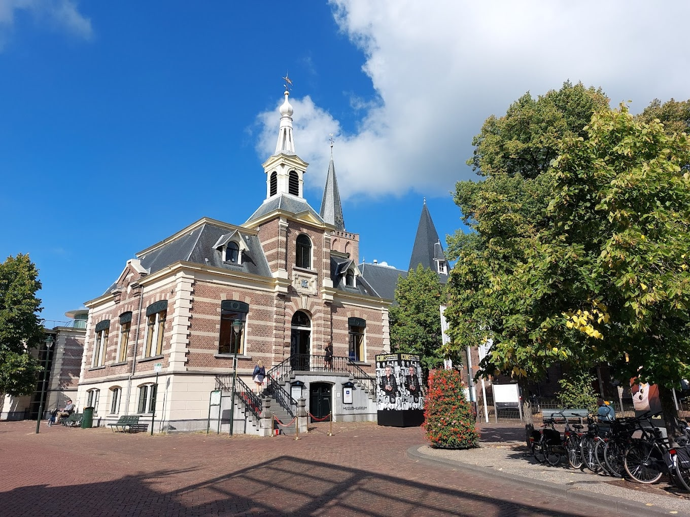

1.Wetenschappers denken dat de naam Hilversum komt van Hilvertshem. Hilvert is een persoonsnaam, en 'hem' komt van 'heem' wat 'woning' betekent.
2.Het hooggelegen Gooi is een van de plekken in Nederland die al het langst bewoond zijn. Op de hogere plekken in het Gooi ontstonden dorpen als Hilversum, Laren, Blaricum en Bussum. Het regenwater stroomde naar de lagere plekken en zo ontstonden een soort meertjes, waar de boeren hun schapen lieten drinken.
3.Op de heidevelden rond Hilversum bevinden zich grafheuvels uit de klokbekerperiode.
4.De belangrijkste manier waarop de Hilversummers geld verdienen was de verkoop en de verwerking van schapenwol, dit bleef zo tot ongeveer 1850.
5.Hilversum staat bekend als mediastad, alle publieke omroepen en enkele commerciële omroepen hebben hier hun kantoren.
Het Raadhuis van Hilversum is het gemeentehuis van de gemeente Hilversum. Dit rijksmonument is gebouwd naar een ontwerp van de toenmalige stadsarchitect en directeur van de dienst publieke werken van de gemeente, Willem Marinus Dudok. Het werd gebouwd in de periode 1928-1931 en wordt beschouwd als Dudoks belangrijkste werk. Volgens de vakliteratuur heeft Dudok zichzelf na deze schepping nooit meer overtroffen, al heeft hij wel enkele gebouwen ontworpen die evenzeer bewonderd worden. Deze zijn vrijwel altijd gebouwd op een kleinere schaal. Het gebouw geniet ook internationaal grote bekendheid en waardering en trekt al tientallen jaren bezoekers uit het buitenland.
Museum Hilversum is een museum in de Noord-Hollandse plaats Hilversum. Het museum richt zich op mediakunst, -cultuur en fotografie vanuit een meervoudig perspectief, enerzijds omdat in de relatie tussen (beeldende) kunst en (nieuwe) media interessante en belangwekkende maatschappelijke vraagstukken aan de orde gesteld kunnen worden, anderzijds omdat mediakunst als fenomeen naadloos aansluit bij het profiel van Hilversum Mediastad.